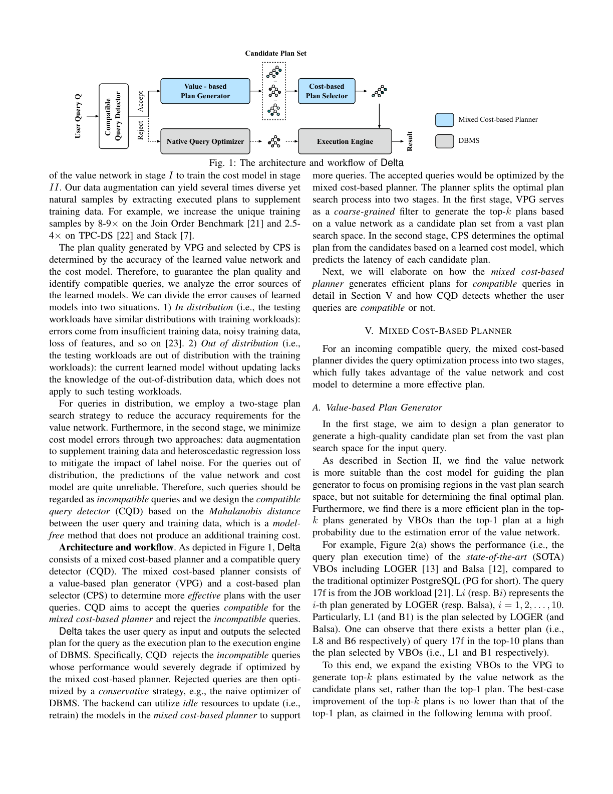
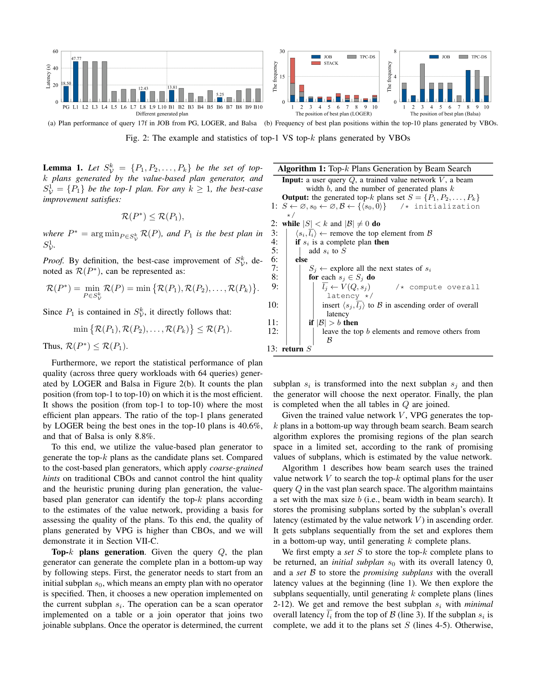
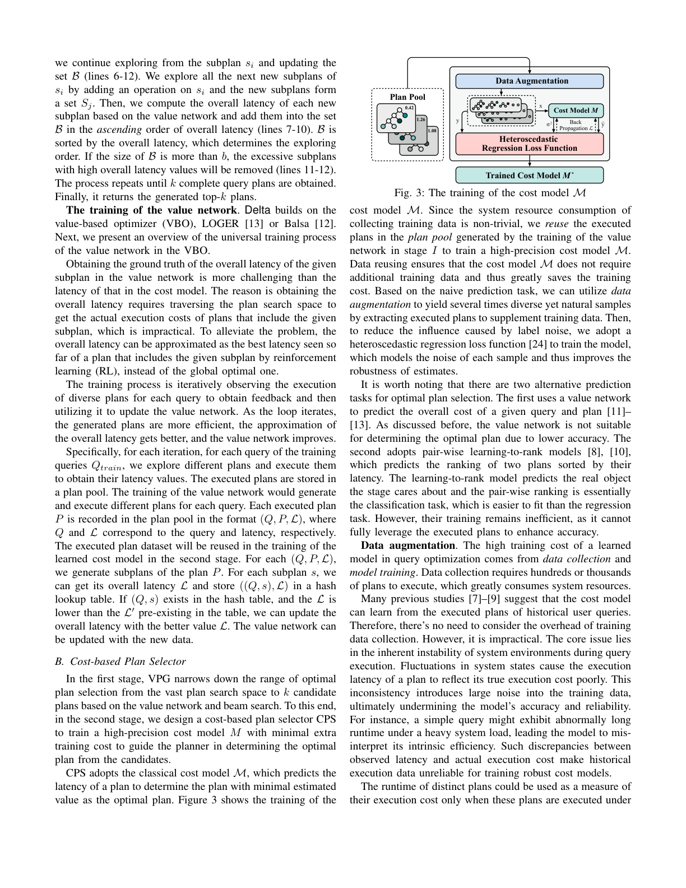
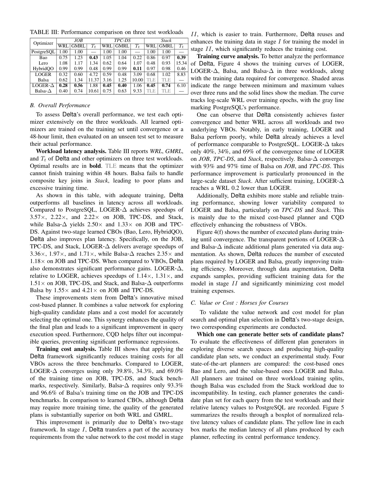

用「兼容查询检测器 + 两阶段混合代价规划器」统一价值网络与代价模型，确定更高效的执行计划
查询优化器是数据库管理系统的关键模块。现有优化器存在两种有缺陷的范式：(1) 基于代价的优化器（CBO）用动态规划与代价模型，但面临搜索空间爆炸与启发式剪枝约束；(2) 基于价值的优化器（VBO）训练价值网络以高效 beam search，但训练成本更高、精度更低。它们也缺乏检测「可能表现糟糕的查询」的机制。为确定更高效的计划，我们提出 Delta——一个混合代价查询优化框架，由兼容查询检测器与两阶段规划器组成。Delta 先用基于马氏距离的探测器预先过滤掉规划器可能表现糟糕的不兼容查询；对兼容查询，启动两阶段混合代价规划器：阶段 I 作为粗粒度过滤器，基于价值网络通过 beam search 生成高质量候选计划，放宽精度要求并缩小搜索空间；阶段 II 用细粒度的排序器基于学习型代价模型从候选计划中确定最佳计划。此外，为降低训练成本，阶段 II 复用并增强阶段 I 的训练数据。三个负载上的实验表明，Delta 识别出更高质量的计划，相对 PostgreSQL 平均加速 2.34×，并超越 SOTA 学习型方法 2.21×。
给定 SQL 查询，优化器旨在确定最小化执行代价（常以延迟为代理）的最优执行计划。由于搜索空间巨大（n 表连接存在 $O(n!)$ 量级计划），寻找最优计划是公认的 NP-hard 问题。按子计划选择准则，现有优化器分两类：
基于代价的优化器（CBO）：传统方法与学习型变体共享同一范式，估计子计划代价并依赖动态规划（DP）搜索。但搜索空间爆炸与启发式剪枝的局限使其难以兼顾计划质量与搜索效率——为满足 DP 最优性原则需保留所有潜在最优子计划（扩大空间），而启发式剪枝（如把搜索空间从 $O(n!)$ 降到左深树 $O(2^n)$）会遗漏最优计划；表连接过多时甚至退化为随机搜索。即便代价模型准确，CBO 也因枚举代价过高难以获得最优计划，故代价模型更擅长「比较完整计划」而非「引导搜索」。
基于价值的优化器（VBO）：用学习到的价值网络估计每个子计划的整体代价（即包含该子计划的所有完整计划中的最小代价，是计划生成真正关心的目标），可用 beam search 等 best-first 搜索高效探索。若价值网络准确，beam search 找到的计划即最优。但价值网络的特殊预测任务使其训练成本更高、精度低于学习型代价模型。
混合代价优化器：综合二者优劣，我们设计两阶段规划器。阶段 I 用基于价值的计划生成器生成 top-k 候选计划（按价值网络排序），作为粗粒度过滤器——目标仅为「保证集合中至少有一个高质量计划」，相比 VBO 追求精确排序全部计划，放宽了对价值网络的精度需求、降低训练难度。阶段 II 用基于代价的计划选择器基于学习型代价模型对候选计划做细粒度评估选最优，把搜索空间从 $O(n!)$ 缩小到 $k$，使直接评估可行。两模型训练成本高：每计划执行需数秒至数分钟且须独占资源，故阶段 II 复用并增强阶段 I 收集的执行计划训练代价模型。此外所有优化器都无法对任意查询都表现良好——我们形式化地把规划器表现糟糕的查询称为不兼容查询，并设计基于马氏距离的检测器：测量 incoming 查询与训练负载分布的偏离，将高偏离者判为不兼容，对其采用保守策略（如原生优化器）。
A. CBO：单阶段 CBO（传统统计代价模型、学习型 Leon）对代价模型精度要求高，且统计模型依赖独立性/均匀性假设导致大误差并随连接指数传播。两阶段 CBO（Bao、Lero、HybridQO）在传统优化器之上用不同策略（禁用算子子集、缩放基数、指定连接顺序前缀）生成多样候选计划，再学代价模型选最优；但它们只在传统 CBO 上做粗粒度 hint 调优，无法控制候选计划集质量。所有 CBO 都依赖 DP 搜索，难以兼顾质量与效率。
B. VBO：用价值网络估计子计划整体代价，beam search 探索全空间；但价值网络比代价模型更难训练（真实整体代价真值更难获取），且取 top-1 计划对精度要求高。
C. 与已有工作差异：Delta 用混合代价模型与两阶段搜索确定更高效计划；相比依赖传统优化器与粗粒度 hint 的两阶段 CBO，Delta 用基于价值的生成器产出更高质量候选；相比 VBO，把探索目标从「选 1 个最优」改为「选 top-k」，放宽精度需求。此外 Delta 用马氏距离检测器预先过滤不兼容查询，而已有优化器假设自己能 equally 处理所有情形。
符号见表 I：$Q,P,s$ 为查询/计划/子计划；$C(P),L(P)$ 为代价/延迟；$M$ 为代价模型，$V$ 为价值网络；$P^*,P^\triangle$ 为候选集中最优/最差计划；$R(P)=L(P)/L(P_0)$ 为相对延迟（$P_0$ 为 PostgreSQL 原生计划）。n 表连接的搜索空间大于 $(2(n-1))!/(n-1)!$。两类模型：代价模型 $M:s\to C(s)$ 或 $L(s)$；价值网络 $V:(Q,s)\to C(Q,s)$ 或 $L(Q,s)$（整体代价=含该子计划的所有完整计划中的最小代价）。
用例子（表 II）说明整体代价：查询 $Q=A\bowtie B\bowtie C\bowtie D$，子计划 $s=A\bowtie B$，含 $s$ 的计划的代价有 100/120/90 等，则整体代价 $C(Q,s)=90$。整体代价比子计划代价更难估计但更有用。两阶段规划器中，阶段 I 生成器 $G$ 产生 $k$ 个候选 $S^k_G(Q)=\{P_1,\dots,P_k\}$，质量用相对延迟 $R(P_i)=L(P_i)/L(P_0)$ 衡量（$<1$ 表示优于 $P_0$）；阶段 II 选择器 $B$ 选出 $P^*=\arg\min_{P\in S}L(P)$。
问题陈述：候选集质量由三项指标衡量——最佳情形改善 $R(P^*)$（越小潜力越强）、最差情形风险 $R(P^\triangle)$（>1 越大风险越高）、高质量计划占比 $\eta(S^k_G)$（$R<1$ 的比例，越大越鲁棒）。满足 $R(P^*)<1.5$ 为兼容查询，否则为生成器不兼容查询。目标：设计新两阶段框架，包含(1) 生成高质量候选集的生成器，(2) 以最小训练成本学高精度选择模型，(3) 为生成器设计兼容查询检测器。
设计：整体代价比代价更适合作为「从巨大空间生成计划」时子计划的评价指标，故把 VBO（LOGER/Balsa）扩展为基于价值的计划生成器（VPG），按价值网络排序选 top-k 而非 top-1。由于价值网络微小误差，top-k 中存在比 top-1 更高效计划的概率很高——理论证明（Lemma 1）$R(P^*)\le R(P_1)$，且实验观察 LOGER/Balsa 的 top-10 候选集质量在 39.4%/91.2% 情形下优于 top-1。相比在传统 CBO 上做粗粒度 hint 的成本型生成器，VPG 能按价值网络估计识别 top-k，为评估计划质量提供依据。
由于代价模型任务更简单、更易训练，阶段 II 用基于代价的计划选择器（CPS）学执行代价模型预测各候选延迟并选最小者。为降训练成本：两阶段规划通过分配精度需求放松价值网络的数据量需求；并复用阶段 I 执行计划、用数据增强扩充——JOB 上唯一训练样本增 8–9×，TPC-DS/Stack 增 2.5–4×。

架构与工作流：Delta 由混合代价规划器与 CQD 组成。CQD 接受兼容查询、拒绝不兼容查询（后者交保守策略如原生优化器，后端可用空闲资源重训模型以支持更多查询）。接受的查询进入混合代价规划器：阶段 I 中 VPG 作为粗粒度过滤器基于价值网络生成 top-k 候选；阶段 II 中 CPS 基于学习型代价模型（预测各候选延迟）确定最优计划。
价值网络比代价模型更适合引导生成器聚焦巨大空间中的「有希望区域」，但不适合确定最终最优计划。图 2 以 JOB 查询 17f 为例：LOGER/Balsa 选的 top-1 计划（L1/B1）并非最优，top-10 中存在更优的 L8/B6。

Top-k 生成（Algorithm 1）：自底向上，从空子计划 $s_0$ 起，每步选作用于当前子计划的算子（扫描/连接），用价值网络 $V$ 估计整体延迟并维护大小为 beam width $b$ 的有序集合，直至生成 $k$ 个完整计划。价值网络训练基于 VBO（LOGER/Balsa），用强化学习把子计划整体延迟近似为「迄今所见含该子计划计划的最佳延迟」；执行计划以 $(Q,P,L)$ 存入计划池，供阶段 II 复用，并为每个子计划 $s$ 记录整体延迟 $((Q,s),L)$ 于哈希表（取更低值更新）。
阶段 I 把最优计划选择范围从巨大空间缩小到 $k$ 个候选；阶段 II 训高精度代价模型 $M$ 指导选优。CPS 采用经典代价模型预测计划延迟选最小者（图 3）。为降训练成本：复用阶段 I 计划池的执行计划，无需额外采集数据；因预测任务简单，用数据增强从执行计划抽取子计划及其直接延迟 $(s,L(s))$ 生成多样自然样本（JOB 8–9×、TPC-DS/Stack 2.5–4×）；为抗标签噪声，采用异方差回归损失建模每样本噪声、提升鲁棒性。

损失函数：代价模型 $M:P\to(L(P),\epsilon(P))$，异方差回归损失 $L=\frac1N\sum_i\big(\frac{(y_i-\hat y_i)^2}{2\sigma_i^2}+\frac{\ln\sigma_i^2}{2}\big)$；第一项对大噪声样本降权，第二项惩罚项防止 $\sigma_i^2$ 无限制增大。模型细节：融合 Bao/Lero 的树卷积特征化（算子 one-hot、基数/代价 min-max 归一化、关系 one-hot 和），经三块树卷积+层归一化+ReLU，动态池化压平后两路全连接分别预测延迟与噪声。
CQD 拦截分布外（OOD）查询以保鲁棒性：用马氏距离 $D_M(\vec x,X)=\sqrt{(\vec x-\vec\mu)^\top\Sigma^{-1}(\vec x-\vec\mu)}$ 衡量查询特征与训练分布的偏离（无量纲、尺度不变、考虑变量相关性）。流程：原生优化器生成基准计划 $P_0$，把 $(Q,P_0)$ 与训练样本同样编码为高维向量，计算马氏距离；阈值指示器 $I=1$（接受）若 $D_M\le\gamma$，否则 $I=0$（拒绝交原生优化器）。$\gamma$ 控制可靠性与覆盖的权衡：小 $\gamma$ 保守（拒绝多、鲁棒但限制收益），大 $\gamma$ 放宽（覆盖广但 OOD 风险升）。
VII-A 设置：负载 JOB（IMDB 3.6GB/21 表，94 训练/19 测试）、TPC-DS（SF=10，15 训练/5 测试模板）、Stack（>100GB/11 表，8 训练/6 测试模板）。基线：PostgreSQL（传统 CBO）、两阶段学习型 CBO（Bao/Lero/HybridQO）、VBO（LOGER/Balsa），并在 VBO 上部署 Delta 架构称 LOGER-Δ/Balsa-Δ。指标：负载相对延迟 WRL（Speedup=1/WRL）、几何平均相对延迟 GMRL、训练时间 $T_t$。参数 $k=10,b=20,\gamma=500$。
充分训练后，Delta 在全部负载延迟上超越所有基线；相比 PG，LOGER-Δ 加速 3.57×/2.22×/2.22×，Balsa-Δ 在 JOB/TPC-DS 达 2.50×/1.33×；相比两阶段 CBO 平均提升 3.36×/1.97×/1.71×（LOGER-Δ），相比 VBO（LOGER/Balsa）提升 1.14–1.51×/1.55–4.21×。训练成本上，LOGER-Δ 仅需 LOGER 的 39.8%/34.3%/69.0% 训练时间。训练曲线（图 4）显示 Delta 收敛更快、WRL 更低且更稳定（方差更小），数据增强扩充了阶段 II 训练样本、显著减少所需执行计划数。

谁生成更好的候选集？对比成本型生成器（Bao/Lero）与价值型（LOGER/Balsa）：在最佳情形改善、最差情形风险、高质量计划占比三项指标上，VBO 均优于 CBO（VBO 中位数 $\eta\ge50\%$，CBO 常低于此），印证价值引导生成更鲁棒。谁更准确地选最优计划？对比价值网络（VN）与三类代价模型（朴素 NCM、学习排序 LTR、本文增强 ECM）：三种代价模型在多数场景下优于 VN（图 6），其中增强 ECM（数据增强+异方差损失）始终最佳。
图 8 混淆矩阵：CQD 在 LOGER-Δ/Balsa-Δ 上召回率 100%（无不兼容查询被误拒、无负面影响），特异度分别 71.4%/80.0%（成功过滤不兼容查询、避免坏计划）。
图 7(a) 消融：去掉 CPS/CQD/数据增强/异方差损失，WRL 分别升 68%/20%/43%/30%，GMRL 升 26%/22%/35%/26%——CPS 与数据增强影响最大。参数：$\gamma=500$ 最佳（更小则接近 PG，>700 则接受全部等同无 CQD）；$k$ 增大时 WRL/GMRL 改善、规划时间仍 <350ms 且对 $k$ 不敏感，默认 $k=10$。
我们提出 Delta——一个混合代价查询优化框架，通过兼容查询检测器与两阶段规划器解决 CBO 与 VBO 的局限。相比传统 CBO（PostgreSQL），Delta 通过缓解搜索空间爆炸与启发式剪枝，实现 2.34× 更快的负载执行；相比两阶段 CBO，因价值型规划器产出更高质量候选，提升 2.11×；相比 VBO，因细粒度学习型代价排序，仅用 66.6% 训练时间却带来 1.94× 更高执行性能。基于马氏距离的检测器通过预先过滤不兼容查询进一步保证鲁棒性。这些结果凸显 Delta 统一价值网络与代价模型、检测不兼容查询以确定更高效计划的能力，为现代查询优化提供了实用方案。